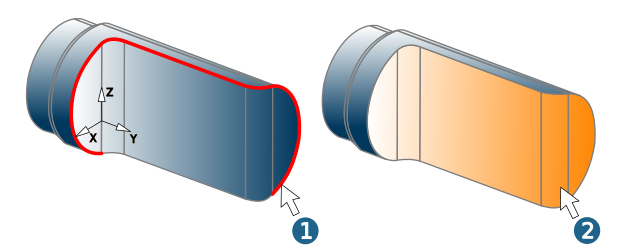
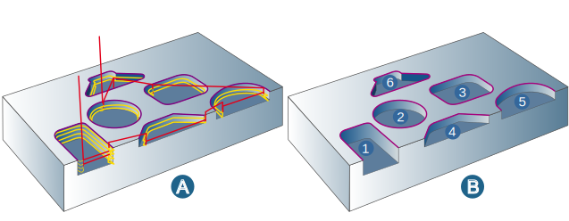
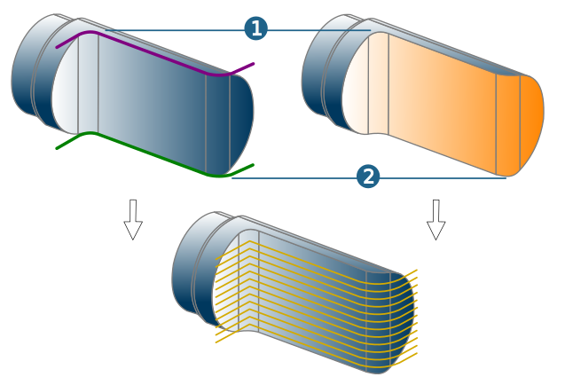

Contours
Mode: In Contour mode (1), select Polylines (2D), Circles, Ellipses, Splines. In Surfaces mode (2), select the surfaces whose curves are to be used. The curves from the frame view are used. These may not intersect or contain internal loops.
|  |
Contour selection
| Select contours. The number of selected contours is displayed. |

For further information on selecting contours, see section Contours.
The following information applies to the Contour mode.
Geometry
Define geometry parameters.
Top / Bottom: Use Top of contour / Bottom of contour to define the upper limit (1) and lower limit (2) for machining relative to the selected frame. Alternatively, use Absolute (jobframe) to define a respective absolute value for the top and bottom.
 |
Specify the Preferred start point, End point and Plunge point parameters. Enable the checkbox for the desired option and select a point.
Preferred start point (1): Freely select for each contour.
 |
End point (2): Set an end point if the contour is to be machined only partially.
 |
Additional allowance: You can define a horizontal (X, Y) and vertical (Z) allowance for each individual contour.
Note
The values for the Additional allowance for contours are taken into account for the path generation but not for collision checks for rapid link movements. The Allowance values defined on the Parameters dialog page are used for this.
Reverse: In the default setting the machining direction follows the direction of the selected contour. This can be seen in the graphic preview. If the generated toolpaths do not result in the intended machining direction, select the relevant contours and select the Reverse option.
Align closed contours: The machining direction can be reversed for all selected closed (!) contours simultaneously. To do so, select the contours and specify the direction of the contours using the Align closed contours > Clockwise / Counterclockwise function from the shortcut menu. The start point and end point are interchanged automatically.
Warning
If you change the machining direction, you should change the cutter position as well.
Connect contours: Select contours and connect them with one another using the Connect contours function from the shortcut menu. Only adjacent contours can be connected with one another.
 |
Global depth
Assign a top and bottom value globally to several contours. The values can either be defined relative to a contour (Contour based option) or refer to the frame selected in the job (Frame based option).
Global depth off: (A) Machining is carried out according to the definition in the area → (1) or → (2).
Contour based: (B) Starting from the height of the defined contour (3), Offset (4) calculates the top andBottom (5) calculates the bottom of the machining. Enter the value for offset and bottom directly.
Frame based: (C) Top (7) and Bottom (8) are calculated starting from the height of the defined frame (6).
| Define the value for top and bottom either from the CAD model using point selection or enter directly. |

 |
Use user variables
The values for Top / Bottom or Offset / Bottom can also be defined using user variables. To do this, proceed as follows:
Click the icon (to the right of the input fields)
 and then the entry Create user variables to open the User Variable dialog.
and then the entry Create user variables to open the User Variable dialog.Select New and enter the name required for the user variable in Key. For example
TOPorOffset. Under Value, enter the height of the top or the required offset value. Proceed in the same way for the user variable for the bottom (for example:CONTOUR DEPTH).
Both values are now be displayed by clicking the icon and can be transferred directly for calculation.
Options
Overlap off: Select this option when the tool should not perform an overlap on the closed contours.
Smooth overlap: Select if the tool is to perform a smooth overlap on the closed contour. Define the Length (2) of the overlap. Use Distance (3) to define the maximum lateral distance of the tool from the model during the overlap.
(1) Start point
(4) = Toolpath points: are shown when this is activated on the General dialog page (in the Toolpath visualization area).
 |
Standard: Select this option when the tool should perform an overlap on the closed contours. Define the Length of the overlap (2).
Optimization
Optimize start points: For closed contours, a search is automatically performed to find the best start points that will facilitate a collision-free standard macro. If a manual start point is defined, this is the preferred start point. Otherwise, either the outer edges (1) or the center point of the longest contour element (2) is used as a start point.
 |
Soft contours: If several contours are selected, these are sorted in such a way that the linking fast travel movements (rapids) are as short as possible (A). If this option is not enabled, the contours are linked with each other in the order in which they are selected (without sorting) (A).
|  |
Technology
Define technology parameters.
Feedrate options
Adapt the feedrate for individual contour elements.
Center (standard): The contour is machined with the standard feedrate.
Edge control: Optimize the feedrate at edges. Two parameters limit the reduction/increase of the feedrate: Min. feedrate (factor) and Max. feedrate (factor). The factor value refers to the standard feedrate at the reference point of the tool and controls the feedrate at the contact point. Permissible values for the Min. feedrate (factor) are between 0 and 1, for the Max. feedrate (factor) between 1 and 10.
Segments: Feedrate adjustment for individual contour areas (segments).
Segments
Assign a feedrate to segments of a contour.
Click the Edit segments button to open the Segments dialog.
Add through three points: Select start point, end point and a further point on the contour.
Add through curves: Select a curve. The starting point and end point are calculated automatically.
The feedrate depends on the usage and can be modified either manually or on the basis of factors.
Select segment.

Click the icon for cutting speed or feedrate.

The icon changed.
Enter the required value.
Select the segment, click the link icon and enter the required factor directly.
Click the link icon.
Enter the required factor directly.

The feedrate applies to the usage that is set on the Tool dialog page under Cutting profile.
The following information applies to the Surfaces mode.
Surface selection
 | Select surfaces. The number of selected surfaces is displayed. |
Global attributes
Define the vertical machining area in Surface mode.
Top / Bottom: Use Top of surfaces / Bottom of surfaces to define the upper limit (1) and lower limit (2) for machining relative to the selected frame. Alternatively, use Absolute (jobframe) to define a respective absolute value for the top and bottom.
|  |
Overlap length: If surface selection results in a closed contour, use the Overlap length to define the distance that the tool should travel beyond the start point (3).
 |